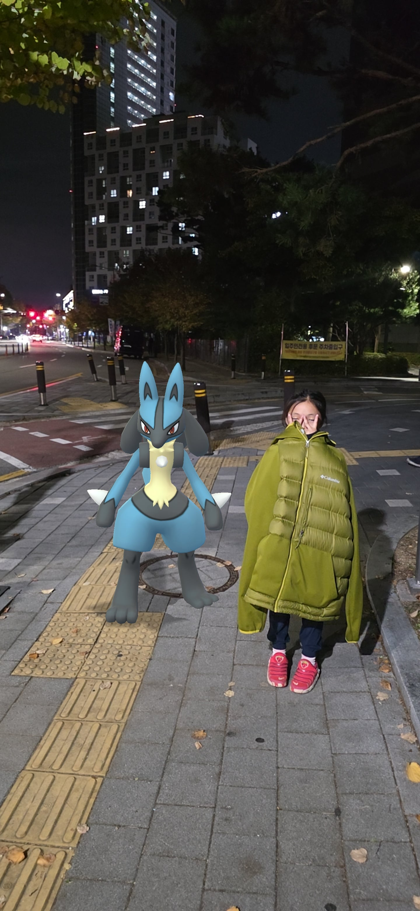

둘째가 춥다고해서 내잠바 줬는데..
저때까지만해도 분명 있었는데....
....없어.....
같이달아둔 스마트태그는 하필 건전지 아웃..
와이프랑 근방 다뒤져봤는데 없어..
문제는 10년된 쏘렌토인데 새로 키하나 다시 살려고 봤더니
25만원 달라고함..
키 가격 7만원
공임비 12만원
수동키 제작(?)6만원
...기아오토큐 기준..
어디 사설같은거 없나? 거긴 얼마함?

둘째가 춥다고해서 내잠바 줬는데..
저때까지만해도 분명 있었는데....
....없어.....
같이달아둔 스마트태그는 하필 건전지 아웃..
와이프랑 근방 다뒤져봤는데 없어..
문제는 10년된 쏘렌토인데 새로 키하나 다시 살려고 봤더니
25만원 달라고함..
키 가격 7만원
공임비 12만원
수동키 제작(?)6만원
...기아오토큐 기준..
어디 사설같은거 없나? 거긴 얼마함?
1. 키 품번을 알아내
2. 알리에서 검색해서 호환키를 사 (3만원정도)
3. 오토큐 가서 만오천원주고 등록해
4. 철키 복사(선택사항)
만오천은 언제적 공임이야;;
새로 맞추면 기존거 어디서 나옴 안맞추면 안나옴
구구 잡아서 공중날기 쓰셈
아방이가 18만원 달라더라
물리적 Key 쓰는거면 가공되지않은 키 하나 구입해서 서브 키 그대로 열쇠방에서 복사하면되지않나?
할아버지냄시나요
새로사잖아?
이놈하고 어디서 나온다
차 하나 줄게

키셋트까지 다 하나보네 가격이 딱
나도 2개다 배터리간다고 염병하다가 기판조져서
사설썻는데 20달래 그것도 중국산 조잡한 짭 현대 기아 키로.... 도낀개낀
이참에 새차 가즈아
찾아라 비밀의 열쇠~
잠바는 둘째한테 갔는데 차키는 어디로 갔을까… 25만 원 내기 전에 둘째 주머니부터 다시 한번 터는 거 추천합니다 ㅋㅋ
ㅅㅂㅋㅋㅋㅋㅋ
당근에서 키 얻어오면 못 쓰나?
이미 등록된 차키에다가는 못씀
주머니 지퍼 꼭 닫으시오.. 나도 주머니 얕은 옷들은 싫더라
놀러갔는데 차키 잃어버려서 불렀더니 그랜저 hg 35달라길래 그돈이면 집에 갔다오고도 남는다고 보내고
영덕에서 안동 갔다 옴.. ㅋㅋㅋㅋ
왼쪽분이 아내분인가? 정말 아름다운 사랑이구나..
키만 새로 사는게 아니라 보안때문에 키박스도 같이 교체해야 해서 좀 비쌈. 그래도 외제차에 비하면 선녀임